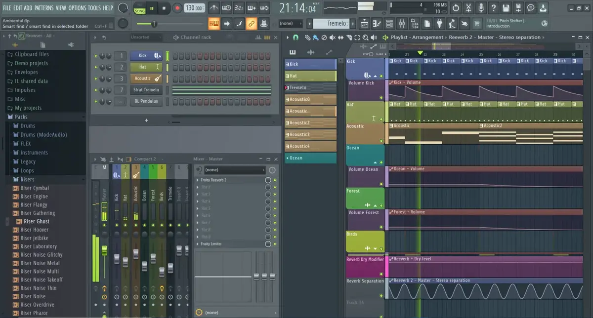
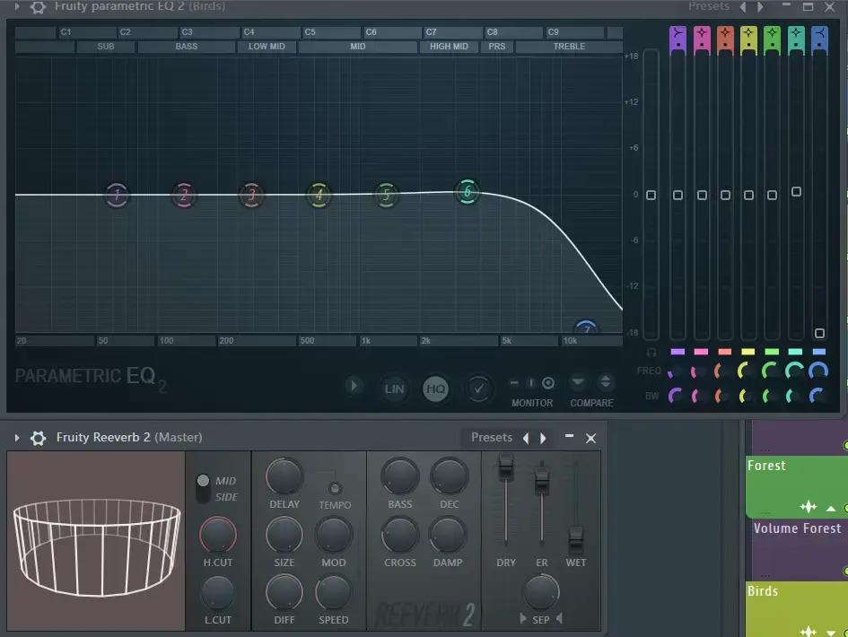
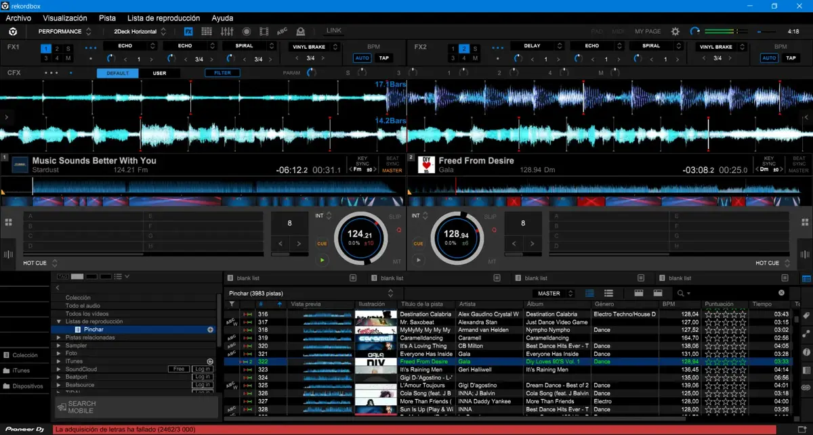

Moving on
A short ambient track.
I produce music in FL Studio, design sound for games and DJ for fun.

A short ambient track.
A synthwave piece with its own visuals.
Both music tracks and every sound effect, composed and recorded from scratch in FL Studio and Audacity.
The audio system with mixer channels and volume options, the music and the sound design.
Lead of sound and UI: the sound effect manager, audio mixers and volume settings, and the first placeholder music.
I shape sounds with reverb, delay, EQ and other plugins, and I check mixes on a spectrum analyser. DJing is a personal hobby that grew out of the same curiosity.

